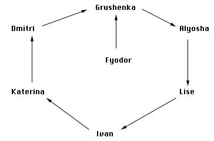
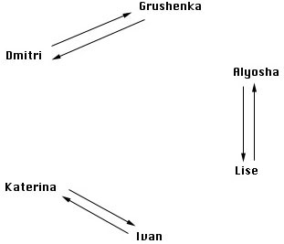

genplot.shtml
General Plot Summary

- * PART ONE
- * PART TWO
- * PART THREE
- * PART FOUR
- * EPILOGUE
- * PART TWO
PART ONE
Part I sets the scene by introducing the main characters of the novel. Fyodor Karamazov is introduced as many things, a buffoon, a philanderer, and in the lightest sense a father to three (legitimate) sons: Dmitri, Ivan and Alexei. From the first paragraph of the book the reader knows that Fyodor will be murdered, and subsequent pages of this section serve only to make the reader glad that this vile creature's existence will soon come to an end. The endless cruelty, which this man shows not only to his wives (both dead) but to their offspring, is astonishing. While none of the boys have a mother left, Fyodor has managed to pass them all off to outside rearing, except for Smerdyakov, who he employs as a servant. All three brothers have come back home for various reasons after being reared by different people all over Russia. Ivan has become an intellectual who questions faith and religion. Dmitri has become a soldier and a sensualist much like his father. Alyosha (Alexei) has adopted the world of god and lives at the monastery following the teachings of Father Zossima. A meeting is set up between Father Zossima and the Karamazov family during which Fyodor manages to make a constant fool of himself. Father Zossima tells Alyosha that he should go out into the world in order to do well. The story of Smerdyakov is introduced as we find out that Fyodor is rumored to be his father after having slept with the town idiot, "stinking Lizaveta," the now-deceased mother of Smerdyakov.
PART TWO
As Father Zossima nears death he gathers a last congregation around him in his cell. It is here that the reader gets the closest interpretation of what it is that the elder prescribes for humanity. He talks about the holy community and the responsibility of its members. Having done this, father Zossima dispatches Alyosha once again in order to fulfill his duties to his father and brothers, namely to mend their feuding. Alyosha first visits his father, who is talking about conserving his money in order to attract young women. On his way out, Alyosha meets a boy, later identified as the young Ilyusha Snegiryov, who is having rocks thrown at him by his schoolfellows. The boy will come up again later as the son of the captain beaten by Dmitri. Alyosha stops by the Madam Khokhlakov's house, to which Lise has summoned him. He speaks with Katerina, who says that she will never leave Dmitri, and Ivan decides to leave for Moscow. Alyosha then goes off under Madam Khokhlakov's orders to give 200 rubles to the captain that Dmitri roughed up a few days earlier. It is upon going (actually failing) to do this that Alyosha sees the schoolboy again who turns out to be the captain's son. When all of this is over, Alyosha gets a final sitting with Father Zossima before the elder dies.
PART THREE
Part Three attacks two greater themes. First, the death of Father Zossima in Part Two attains post-mortem significance as the body begins to putrefy almost immediately after death, signifying possible corruption. This of course creates a great stir, and the monastery and religious society find themselves divided among those who were for and against the father in life. For Alyosha, the death and rapid putrefaction have, of course, a very deep significance -- the effect of all this being a crisis of faith. Alyosha then goes on to accept sausage and vodka from Grushenka in a contradiction to Lenten ritual. Grushenka and Alyosha spend some time together and slowly develop a close relationship, with undertones of sensuality. Meanwhile, the second grand theme of Part Three is the announcement of Fyodor's murder and the subsequent arrest of Dmitri (who we know killed Grigory, but know nothing as to his involvement with the murder of his father). Dmitri is hauled off to prison where, instead of maintaining his innocence, he decides that he is somewhat guilty of his father's murder. Although they do not bear direct responsibility, Dmitri, Grushenka and later Ivan will all feel a portion of guilt and suffering over the death of Fyodor. The interesting part about Book Three is its illustration of Father Zossima's mark on humanity even in passing. Many in the novel seem not only to understand but also to embrace the late elder's philosophy. Dmitri, who is stuck in jail, feels responsible for the actions of other humans. Grushenka feels guilty for having tampered with the relationship between Old Karamazov and Dmitri. Alyosha understands that his faith should not have to rest on the miracle that Zossima should be preserved for longer than he was -- in short, that faith should not necessitate miracles. Finally, even Lise feels that she must suffer and repent as she slams her fingers in the door in an act of blatant self-violence. All come to believe that suffering is the only road to spiritual purity.
PART FOUR
Part Four carries the reader through the long awaited trial of Dmitri Karamazov. The opening book of Part Four, as a short anecdote unto itself, serves as an interlude and affords some respite from the otherwise heavy and dramatic story line of the book. The story of a dying boy, Ilyusha, brings out a tender sentimentality that has been previously lacking in the book. The story repeats the theme of Alyosha's involvement in teaching and influencing the youth. Heading back toward the central plot of the story, Dmitri has been in jail for two months and it seems that most of the main characters are
caught up in heavy emotional grief. Dmitri is convinced that his salvation
will come through suffering. Ivan is tortured by the pangs of his conscience
as he realizes that he himself played a large part in the murder of old
Karamazov. Ivan understands his guilt in the matter and ultimately ends
up incriminating himself to a certain extent (although nothing really comes
of his admitted involvement). Smerdyakov, ultimately bearing the guilt for
the murder, kills himself, no one cares, and Ivan, Grushenka, Alyosha and
Katerina all testify to the upstanding character of Dmitri. In the end,
Katerina produces the note that will eventually condemn Dmitri in her efforts
to shield her own beloved, Ivan, from implication in the murder. She thinks
that Ivan only came to the rescue of his brother in a nervous fit, and that
he did not intend to free Dmitri at his own expense. As in any conclusion,
it is to be expected that Part Four hopes not only to provide closure to
the story but also to proclaim Dostoevsky's words of wisdom and guidance.
Other works by the author have indicated, however, that this may not be
his strongest suit. Bringing issues to light and proving a position is often
much easier than prescribing a cure. In The Brothers Karamazov the potential
evil of humanity is boldly illustrated. The cure may indeed lie within a
love for humanity and the teachings of societal responsibility. It is only
when the group feels societal consciousness that evil can be eradicated.
In effect, we must help one another out just as Alyosha attempts to help
his family, the children, and all the other personalities he comes into
contact with. If this concept of societal rather than individual guilt is
the key to salvation then it becomes necessary to uphold a global human
superconscience.
EPILOGUE
Katerina ends up asking Dmitri's forgiveness just after Dmitri decides that he will indeed escape to America (with the help of Ivan) for a while and bear the burden of an exile. Alyosha, who has consistently been the voice of moral probity, is last seen walking off with the children he will undoubtedly mold in Father Zossima's image.
